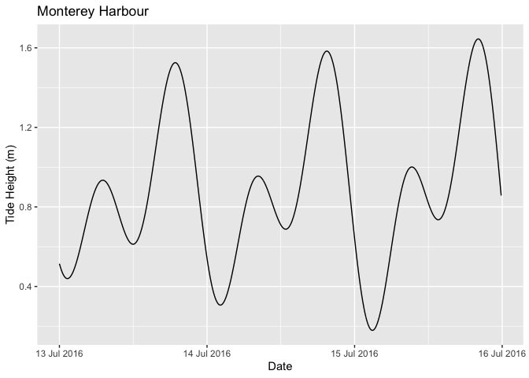

Introduction
rtide is an R package to calculate tide heights based on tide station harmonics.
It includes the harmonics data for 637 US stations.
Utilisation
library(rtide)
#> rtide is not suitable for navigation
data <- rtide::tide_height(
"Monterey Harbor", from = as.Date("2016-07-13"), to = as.Date("2016-07-15"),
minutes = 10L, tz = "PST8PDT")
print(head(data))
#> # A tibble: 6 x 3
#> Station DateTime TideHeight
#> <chr> <dttm> <dbl>
#> 1 Monterey, Monterey Harbor, California 2016-07-13 00:00:00 0.514
#> 2 Monterey, Monterey Harbor, California 2016-07-13 00:10:00 0.496
#> 3 Monterey, Monterey Harbor, California 2016-07-13 00:20:00 0.481
#> 4 Monterey, Monterey Harbor, California 2016-07-13 00:30:00 0.468
#> 5 Monterey, Monterey Harbor, California 2016-07-13 00:40:00 0.457
#> 6 Monterey, Monterey Harbor, California 2016-07-13 00:50:00 0.449ggplot(data = data, aes(x = DateTime, y = TideHeight)) +
geom_line() +
scale_x_datetime(name = "Date",
labels = date_format("%d %b %Y", tz="PST8PDT")) +
scale_y_continuous(name = "Tide Height (m)") +
ggtitle("Monterey Harbour")
Installation
To install the latest release from CRAN
install.packages("rtide")To install the developmental version from GitHub
# install.packages("remotes")
remotes::install_github("poissonconsulting/rtide")To install the latest developmental release from the Poisson drat repository
# install.packages("drat")
drat::addRepo("poissonconsulting")
install.packages("rtide")Shiny
Tide heights can be also obtained using rtide through a shiny interface developed by Seb Dalgarno.
Contribution
Please report any issues.
Pull requests are always welcome.
Code of Conduct
Please note that the rtide project is released with a Contributor Code of Conduct. By contributing to this project, you agree to abide by its terms.
Inspiration
The harmonics data was converted from https://github.com/poissonconsulting/rtide/blob/master/data-raw/harmonics-dwf-20151227-free.tar.bz2, NOAA web site data processed by David Flater for XTide. The code to calculate tide heights from the harmonics is based on XTide.